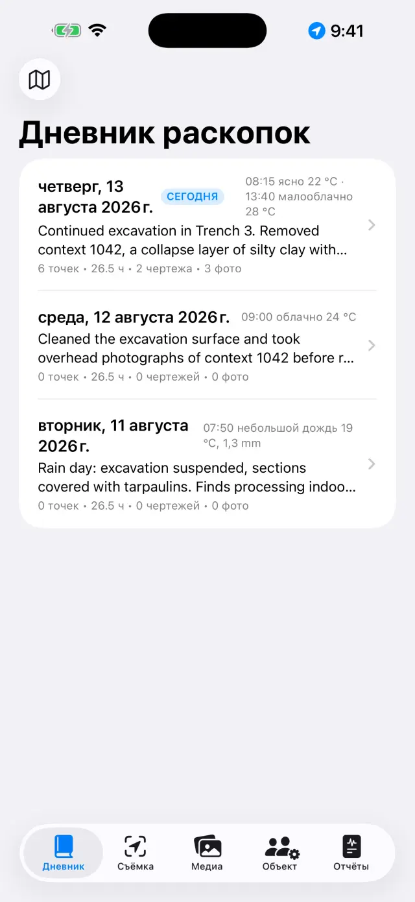
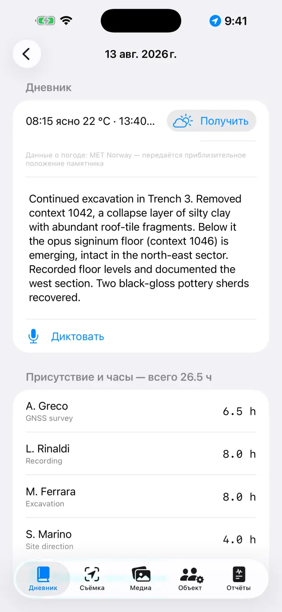
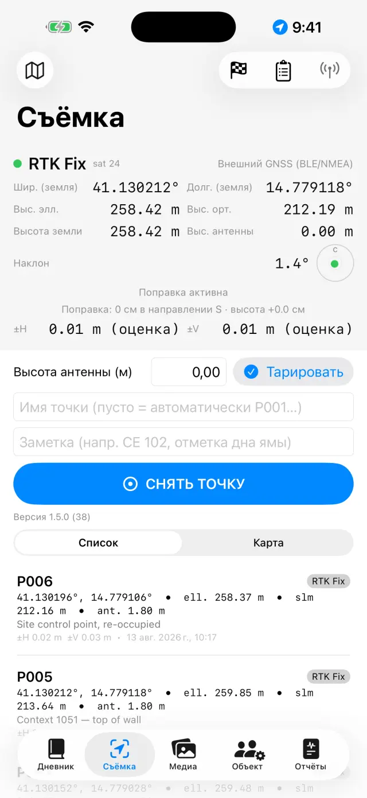
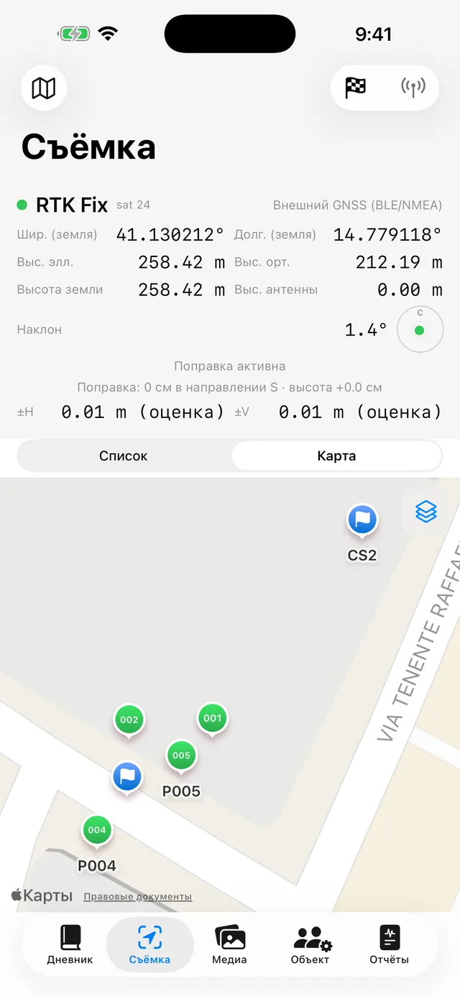
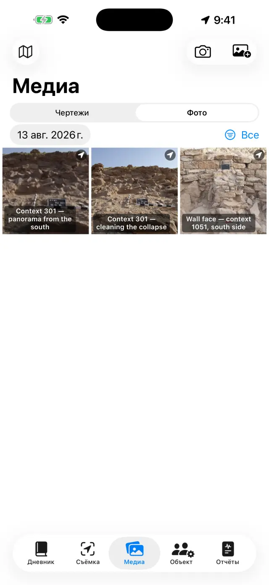
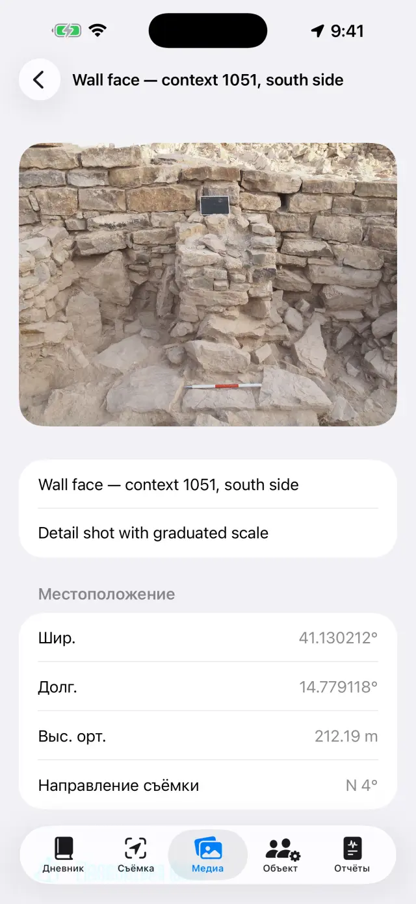
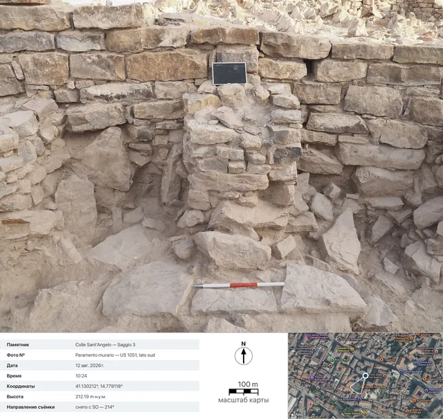
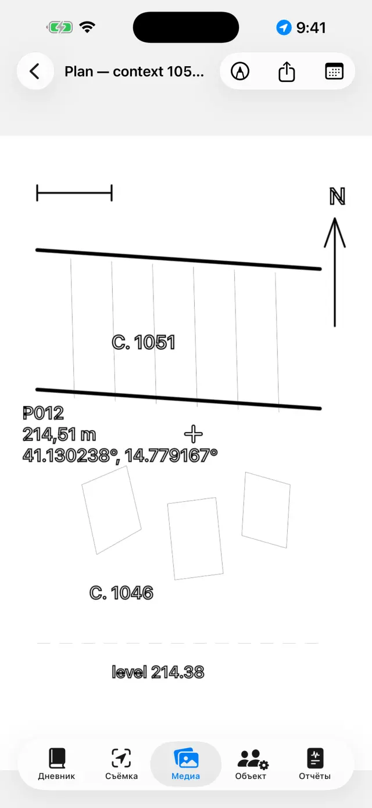
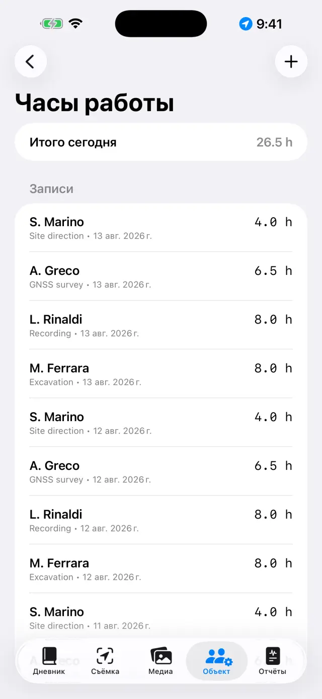
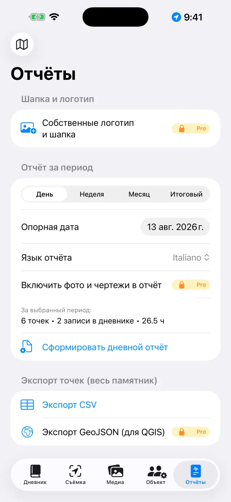

Цифровой дневник раскопок для iPhone и iPad. 100% офлайн: ваши данные остаются на устройстве.
В двух словах
Идея всего одна: каждый день раскопок — это страница, которая
заполняется сама. Вы фиксируете всё там, где это происходит, — точку GNSS в
разделе Съёмка, фото в Медиа, часы в Объекте, — а страница дня в разделе
Дневник автоматически собирает всё это. В конце недели или по
завершении раскопок отчёты формируются сами на основе страниц.
Типичный день
УтроОткройте страницу дня, отметьте погоду и запись в дневнике (можно и голосом — кнопкой Диктовать)
ПрисутствиеВ разделе Объект зафиксируйте, кто присутствует, и часы каждого
СъёмкаСнимите точки GNSS; при работе с RTK сначала проверьте репер
ФотоСнимайте из раздела Медиа: координаты прикрепляются сами
ЧертежиПерерисуйте разрез или план поверх фото (цифровая «калька»)
НаходкиПоставив перед собой ящики, запишите то, что вышло из раскопа: Объект → Находки
ВечерВ разделе Отчёты сформируйте дневной отчёт: PDF готов к отправке
Первые шаги
При первом запуске уже есть демонстрационный памятник. Чтобы создать свой,
нажмите на имя памятника вверху (значок 🗺) → Новый памятник…
и дайте ему имя (например, «Colle Sant'Angelo — Раскоп 3»).
Имя активного памятника всегда видно вверху: на всех вкладках отображаются
данные этого памятника. Чтобы сменить памятник, нажмите на имя ещё раз:
список находится под заголовком «Ваши памятники», а с помощью
Переименовать памятник… вы можете исправить имя, ничего не
потеряв.
Предоставьте разрешения, когда система их запросит: местоположение
(для точек), камера (для фото), микрофон (для надиктовки),
Bluetooth (только если используете внешний приёмник).
Пять вкладок
📓 Дневник
Нажмите на день, чтобы открыть его страницу: дневник, погода, присутствие,
точки, фото и чертежи этого дня уже там.
Напишите текст дневника или нажмите Диктовать и говорите:
распознавание происходит на устройстве и работает даже без сети.
Погоду можно вписать вручную (например, «Ясно, 28 °C, лёгкий ветер») или
получить нажатием Получить — приложение запрашивает текущие условия
у норвежской метеослужбы. Для этого нужна сеть, и это работает только для
сегодняшнего дня: погоду за вчера восстановить уже нельзя. Повторное нажатие
днём добавляет ещё одно измерение. То, что вы вписали вручную, всегда имеет
приоритет.
При запросе погоды наружу уходит только положение района, округлённое
примерно до 11 метров, а в отчётах строка появляется на языке отчёта.

Список дней

Страница дня
📍 Съёмка
Панель вверху показывает текущее положение в реальном времени: координаты,
высоты, точность и тип fix (GPS / RTK Float / RTK Fix).
Если используете веху, задайте Высота антенны (м): высота точки
автоматически приводится к земле.
Нажмите Снять точку. Имена присваиваются по порядку (P001,
P002…), но можно ввести своё (например, «СЕ 102 — дно ямы») и добавить
заметку.
Переключайтесь между Список и Карта, чтобы видеть
точки на местности; на карте можно включить кадастр или другую службу WMS.
Реперы (🏁) находятся в своём разделе: импортируйте их из CSV или создайте,
а затем откройте Проверка в реальном времени и проверьте отклонения
ΔС/ΔВ/ΔВыс., поставив наконечник вехи на гвоздь, прежде чем начинать съёмку.
В разделе Журналы нивелирования находится полевой журнал для
оптического нивелира: станции, отсчёты назад и вперёд, высоты, вычисленные от
исходного репера, с контролем невязки. Нивелированные точки попадают в памятник
со своей высотой, как и точки GNSS.
На устройствах со сканером LiDAR (iPhone Pro начиная с
12, iPad Pro) появляется Измерение 3DPRO:
медленно ведите камерой, пока поверхность не восстановится, затем коснитесь
двух нужных точек и прочитайте расстояние, горизонтальное расстояние и
превышение. Командой Привязать к реперу вы выбираете репер с
известной высотой и касаетесь его точки на земле: с этого момента каждое
измерение несёт и высоту над уровнем моря обоих концов. Зафиксировать
оставляет измерение в сцене, Отклонить измерение его выбрасывает,
Перенести в дневник делает из него текст, который вы правите перед
подтверждением. Это оптическое измерение, и приложение прямо об этом пишет:
«LiDAR ±cm» — оно годится для превышения или длины, снятой на скорую руку прямо
на месте, и не заменяет ни GNSS, ни нивелир. На устройствах без сканера кнопки
просто нет.
Под панелью находятся Записи NMEA: сырой поток внешнего приёмника
PRO сам пишется в файл — запись начинается, когда вы
включаете антенну, и закрывается, когда выключаете её, так что помнить об этом
не нужно. Это нужно, чтобы перечитать сомнительный день или передать сырые
данные тому, кто занимается постобработкой. Файлы можно передавать и удалять,
кроме того, в который идёт запись; список открывается и при выключенном
приёмнике, так что вчерашние файлы остаются доступны.

Панель GNSS раздела Съёмка

Точки и реперы на карте
Каждая точка сохраняет обе высоты:
эллипсоидическую и ортометрическую (над уровнем моря). При использовании
встроенного GPS телефона высота над уровнем моря может быть недоступна: для
этого нужен внешний приёмник (см. ниже).
📷 Медиа
Снимайте кнопкой камеры или импортируйте из галереи.
Фото получают порядковое имя (F001, F002…) и привязываются к последней
доступной позиции GNSS.
При съёмке приложение также фиксирует по компасу направление
съёмки: в деталях фото и в отчётах вы увидите «вид с SO — 214°», а
для кадров, снятых вертикально вниз (план, дно СЕ), — зенитная пометка с
направлением верхнего края. Если компас подвержен помехам, приложение
сообщает об этом.
Нажмите на фото, чтобы задать название и заметки (например, «СЕ 102 с
севера»).
Поделиться карточкойPRO формирует
фотодокументационную карточку: фото с данными съёмки под
ним (памятник, номер, дата и время, координаты, высота, направление),
спутниковый вид с меткой места и конусом обзора, масштабную линейку карты и
стрелку севера. Для карты нужна сеть: без неё карточка всё равно
формируется, с расширенной панелью данных.
Виртуальный масштаб кладёт на фото те ориентиры, которых у вас
не было в поле. Сначала Откалибровать фото: вы касаетесь двух концов
известного расстояния — деления рейки, длины кирпича — и объявляете его в
сантиметрах. Потом ставите то, что нужно: Масштабная линейка 5 см,
Масштабная линейка 10 см или Масштабная линейка 20 см,
Веха 50 см, Веха 1 м или Веха 2 м,
Квадрат 10×10 см, Опорный крест и
Северная стрелка. У каждого элемента свой вид
(Плоская планка, Настоящая веха,
Линейка с делениями), своя величина, толщина и поворот; чтобы
передвинуть элемент, удерживайте его нажатым и тяните — так
сведение пальцев для масштабирования не сдвинет его по ошибке.
Добавить измерение измеряет на фото любое расстояние двумя
касаниями. Число не сохраняется никогда: если вы перекалибруете, все подписи
перепишутся сами. На снимках, сделанных приложением отвесно вниз, северная
стрелка рождается уже развёрнутой по записанному азимуту, и отчёт об этом
сообщает; если вы повернёте её сами, пометка сменится на «заявлено».
Поделиться с масштабом выдаёт копию фото с тем, что вы на него
положили, — Поделиться фото остаётся голым оригиналом, со своим
EXIF.
Пакетная обработкаPRO (меню вверху в
разделе Медиа) берёт из галереи группу фото и прогоняет их все через
подсчёт и измерение, одно за другим: каждое фото становится фотографией
памятника с датой съёмки, и у каждого будет своя новая карточка
находок, которую надо подтвердить. Экран остаётся включённым на всю
серию. Если вы выйдете или прервёте её, уже готовые фото останутся черновиками,
а Продолжить серию начнёт с того места, где всё остановилось. В конце
приложение проводит вас по карточкам одну за другой: поправьте происхождение,
категорию и количество и подтвердите.

Галерея фото

Детали фотографии: координаты, высота и направление съёмки

Экспортированная карточка: данные съёмки, спутниковый вид с конусом обзора, масштабная линейка карты и стрелка севера
🧮 Подсчитать и измерить (в разделе Медиа)
Поднос с фрагментами, снятый сверху, — и приложение само их считает и
измеряет. Функция живёт на фото находки: вы открываете его из
её карточки и нажимаете Подсчитать и измеритьPRO.
Сначала масштаб. Приложение само ищет на фото масштабную
линейку: если находит, говорит, сколько клеток прочитало, вы
объявляете, сколько составляет одна клетка (1, 2, 5 или 10 см), и нажимаете
Использовать предложение. Если не находит — коснитесь вручную двух
концов известного расстояния. Можно выбрать и Не калибровать: тогда
идёт только подсчёт, и приложение пишет, что размеров нет, — оно их не
выдумывает.
Модель обводит все формы на фото: на это может уйти несколько десятков
секунд. То, что появляется, — предложение, а не результат:
касание исключает форму, ещё одно возвращает её. Объединить сливает
в одну те формы, которые на деле один фрагмент, расколотый надвое;
Ограничить областью даёт обвести пальцем границу подноса, и поиск
остаётся внутри; Точный проход проходит заново только там, где
ничего не нашлось. Подозрительные формы — те, что похожи на
фон, на подстилку, на тень, — группируются и исключаются одним разом.
Командой Материал формы вы касаетесь фрагмента и говорите, что
это; Материал для всех задаёт его всем сразу или только тем, что
остались без материала. Предложить материал просит модель на
устройстве угадать его: это предложение, которое надо проверить, и ваш выбор
побеждает всегда.
Далее открывает лист подтверждения с уже написанным текстом:
число, размеры (больший × меньший, в этом порядке) и честные оговорки — «из
которых N без достоверного измерения», когда форма не даётся измерить. Если на
фото есть бирка, приложение пробует её прочитать и всегда об
этом сообщает: либо «Прочитанная бирка: …», либо «На фото нет читаемого
текста».
Переключатели появляются только там, где есть пустое место, которое надо
заполнить: Использовать число как количество,
Использовать как шифр, Использовать как происхождение. То,
что вы написали сами, не переписывается никогда, а заметки
удлиняются: второй заход встаёт в хвост первому, а не на его
место. Текст можно править: в заметки попадает то, что вы там читаете.
Потом, в деталях фото, Номера на фигурах показывают или прячут
номерки — и как вы их видите там, так они и выйдут при обмене и в отчётах.
Коснитесь формы, чтобы узнать, кто она: «7: 4,2×2,8 cm». Если фото не
откалибровано, подпись так и говорит, вместо того чтобы дать число.
Размер верен в плоскости тех двух точек, что вы
откалибровали: снимать надо отвесно вниз, поднос параллельно матрице.
Заявленный ориентир — ±2 мм на фрагментах, хорошо попавших в кадр; фрагмент,
стоящий на ребре или лежащий у самого края фото, из этого договора
выпадает.
✏️ Чертежи (в разделе Медиа)
Создайте новую доску и выберите фото памятника в качестве фона: это ваша
цифровая «калька». Чертёж можно продолжать в течение нескольких дней. Фото
можно и не выбирать: на белой кальке рисуется точно так же.
Обведите слои, разрезы и камни пальцем или Apple Pencil. Сведите
или разведите пальцы, чтобы масштабировать (до 6×, двойное касание
двумя пальцами возвращает к 1×). Если фото перекрывает линии, в меню камеры
выберите Непрозрачность фона… и выставьте её как нужно, от 5% до
100%: бледнеет фото, а не чертёж. Выбор сохраняется у доски и действует также
в PDF, DOCX, PNG и в Экспорт с легендой.
Всё остальное собрано под Инструменты (гаечный ключ на панели) —
это список из семи режимов: Текстовое поле, ОбводкаPRO, Масштаб фото, Точка с высотой,
Штриховка, Стиль линии и
Виртуальный масштаб. Включён может быть
только один: галочка показывает какой, и пока он включён, палец
не рисует, а управляет этим инструментом — чтобы вернуться к рисованию, нажмите
на отмеченный пункт ещё раз. Три пункта, работающие по изображению (обводка,
масштаб, точка с высотой), появляются, только если есть фоновое фото.
Инструментом Текстовое поле расставьте подписи (например,
«СЕ 1002»): их можно перемещать, изменять размер сведением пальцев, и доступны
четыре варианта шрифта.
ОбводкаPRO распознаёт контур объекта,
которого вы касаетесь (камень, граница слоя), и превращает его в линию: цвет,
толщину и стиль линии можно менять, не выходя из режима, а контуры выходят
гладкими, а не ступенчатыми. Всё происходит на устройстве, без сети.
Внутри обводки команда Обвести всёPRO
сама проходит по всему фото. В стартовом окне вы выбираете оформление —
Только контуры либо штриховку и, при желании, Цветная подложка — и нажимаете Запустить: полоса показывает, на каком
этапе работа, и уходит несколько десятков секунд. То, что появляется, — это
предпросмотр, а не чертёж: касание внутри фигуры исключает её,
ещё одно возвращает (среди наложенных фигур побеждает самая маленькая под
пальцем), Точный проход проходит заново только там, где ничего не
нашлось, а Применить переносит на чертёж то, что осталось. Пока вы
не применили, доска не тронута.
Инструментом Масштаб фото (линейка) коснитесь двух концов
известного отрезка — участка рейки — и впишите реальное расстояние: фото
получает масштаб, и с этого момента экспорт указывает размеры в метрах.
Инструментом Точка с высотой поставьте на фото крестик точки
GNSS памятника (или точки, введённой вручную): имя, высота и координаты
появляются в перетаскиваемой подписи с выносной линией. Сведите или разведите
пальцы на выбранной подписи, чтобы уменьшить или увеличить её, когда значения
закрывают чертёж.
Штриховка заполняет фигуры: вы касаетесь внутри
замкнутой фигуры, и она заливается. Есть десять условных штриховок —
Кладка / камень, Кирпич, Раствор / штукатурка,
Глина, Ил, Песок, Гравий,
Уголь / зола, Материковая порода, Дерево — и
Цветная подложка (цвет со своей прозрачностью), по отдельности или
вместе. Если одна фигура находится внутри другой, побеждает самая маленькая под
пальцем; Удалить заливку очищает её. Фото не требуется: заливка
работает по нарисованным фигурам, поэтому действует и на белой кальке.
Стиль линии оформляет уже нарисованную линию: вы
касаетесь её и выбираете между Сплошная, Штриховая,
Пунктирная и Штрихпунктирная, задавая толщину.
Рисовать этим стилем заставляет следующие линии рождаться уже
оформленными; Убрать стиль возвращает сплошную линию. Это не экранный
эффект: штрихи — настоящие отрезки, и они остаются такими в PDF, DOCX, PNG, SVG
и DXF.
Виртуальный масштаб приносит на доску те же ориентиры, что и на
фото: масштабную линейку, веху, квадрат, опорный крест, северную стрелку и
измерения двумя касаниями. Метрические типы требуют, чтобы у доски был масштаб,
то есть Масштаб фото: без известного расстояния приложение объясняет,
а не рисует. В SVG и DXF PRO эти элементы выходят
векторами, на своём слое, и размер, снятый линейкой ГИС,
совпадает с подписью.
Экспорт с легендойPRO: изображение
выходит с белой полосой снизу — метрической шкалой (если есть масштаб),
стрелкой севера для фото, снятых вертикально вниз, «вид с …» для фронтальных.
Экспорт в векторPRO: SVG для
чертежа или DXF для ГИС. При наличии как минимум двух
высотных точек с координатами на фото, снятом вертикально вниз, DXF выходит
с геопривязкой в UTM и в QGIS сам встаёт на своё место на
карте мира; при наличии только масштаба — выходит в локальных метрах; без
того и другого приложение сообщает об этом и не создаёт файл без единиц
измерения. SVG составляет исключение по непрозрачности: он встраивает исходное
фото как есть, поэтому приглушённый фон там выходит в полную силу.
Когда закончите, скройте фото: останется чистый чертёж, готовый для
отчёта.

Цифровая калька
👷 Объект
Записывайте присутствие за день: имя, должность и часы каждого.
Ведите учёт оборудования и того, за кем оно закреплено.
В пункте Находки лежит журнал того, что выходит из раскопа, а
под названием написано, сколько строк уже записано.

Присутствие и часы
📦 Находки (в разделе Объект)
Настоящий момент — не съёмка: это когда в конце дня садишься с ящиками перед
собой и пробиваешь их один за другим, усталый и с грязными руками. Всё здесь
сделано ради этого момента — и это бесплатно, как и запись
точек: сдать то, что выкопал, — это базовая документация.
Объект → Находки → +. Карточка открывается
уже с сегодняшней датой и с последним использованным
происхождением: начиная со второй строки, записывать — это почти одни
касания. Поле подсказывает происхождения, уже использованные на этом
памятнике.
Поля идут в том порядке, в каком их и заполняют на деле:
Происхождение (например, «СЕ 102»), Категория,
Количество с полем Единица (фрагменты, штуки, пакеты,
ящики, граммы), шифр ящика или пакета, Статус (К мойке,
Промыто, Промаркировано, Передано), заметки и
дата.
Предлагаемых категорий одиннадцать — Керамика, Кирпич,
Кости животных, Человеческие кости, Металл,
Стекло, Каменная индустрия,
Раствор и штукатурка, Дерево, Образцы,
Другое, — но можно написать и свою («Расписная штукатурка»): она
останется этим самым словом на любом языке, потому что приложение переводит
только те названия, которые предлагает само.
Количество можно оставить пустым: строка может сказать «эта штука тут была»,
не считая её, и в экспортах эта ячейка останется пустой, а не нулевой.
Фото для карточки снимаются кнопкой Сделать фото, берутся через
Из галереи либо через С памятника, который вылавливает те
фото галереи, у которых ещё нет карточки. Это те же фото, что и в
Медиа: удаление находки не удаляет её фотографии,
они лишь теряют связь.
На странице дня раздел Находки появляется, только если в этот
день вы что-то записали. Перенести в дневник предлагает сводную
строку, сгруппированную по происхождению и с заметками целиком: вы правите её и
добавляете в конец дневника. Нажатое дважды пишет дважды — дневник никогда не
переписывает сам себя.
📄 Отчёты
Выберите тип: дневной (бесплатно, с водяным знаком),
недельный, месячный или итоговый
с полными приложениями PRO.
Выберите язык отчёта из семнадцати, независимо от языка
приложения: отчёт может выйти на английском, даже если вы работаете в
приложении на русском.
Сформируйте PDF или экспортируйте DOCX с логотипом и фото
PRO, CSV точек, GeoJSON для QGIS
PRO.
Внизу есть Экспорт находок (весь памятник), бесплатный:
Экспорт CSV находок для электронной таблицы и
Экспорт HTML находок для таблицы с миниатюрами, которая открывается в
любом браузере без сети. Заголовки, категории, единицы и статусы выходят на
языке, выбранном для отчёта; то, что написали вы, остаётся так, как вы это
написали. В итоговом отчёте у находок есть своё приложение, по
происхождениям.
При включённых фото в отчётах можно выбрать Фотокарточки вместо фотографийPRO: каждое фото попадает в PDF и DOCX
как карточка документации с полными данными и картой, на языке отчёта.

Формирование отчётов
Внешний приёмник GNSS и NTRIP
С внешним приёмником (антенна сантиметровой точности) приложение достигает
точности RTK. Встроенный GPS всегда остаётся доступен как запасной вариант.
Включите приёмник и активируйте Bluetooth на телефоне.
В разделе Съёмка выберите источник позиции: Внешний GNSS
(BLE/NMEA)PRO и выберите свой приёмник из
списка. Поддерживаются также приёмники MFi (бесплатно) и приёмники,
передающие NMEA по сети.
Для RTK-коррекций настройте NTRIP: адрес кастера, порт,
mountpoint, имя пользователя и пароль (хранятся в связке ключей устройства).
Приложение отправляет вашу позицию кастеру и получает поправки.
Дождитесь перехода в RTK Fix: сантиметровая точность.
Перед началом работы проверьте на репере.
Там, где телефон не ловит сеть, есть и путь без
интернета: база, установленная на точке с известными координатами, и
ровер обмениваются поправками по радио LoRa, без кастера и без
SIM-карты (комплект RTK DFRobot с мостом ESP32). Для приложения ничего не
меняется — оно получает от приёмника уже исправленный NMEA, — а сборка моста
описана отдельно, в своём README: это остаётся руководством по приложению, а не
пособием по прошивке.
Резервное копирование и обмен
В меню памятника нажмите Экспорт памятника (.zip): внутри
всё — дневник, точки, фото, чертежи, часы, реперы.
Храните ZIP-файл где угодно (Файлы, Диск, почта…). Это ваша резервная
копия: у приложения нет облака — сознательно.
Импорт памятника (.zip)… воссоздаёт памятник на другом
устройстве, даже между iPhone и Android.
⚠️ Удалить памятник… удаляет памятник со всем его
содержимым и является необратимым действием: если сомневаетесь,
сначала экспортируйте ZIP.
Pro — это подписка на месяц или на год с автопродлением, либо разовый
пожизненный платёж. Управлять подпиской и отменить её можно в любой момент в
настройках Apple ID.
Когда вам полагается бесплатный пробный период, экран Pro пишет об этом до
покупки («7 дней бесплатно, затем …»): если этого не написано, он вам не
полагается — приложение не обещает пробу, которой потом покупка не даст.
Решение проблем
Bluetooth-приёмник не появляется или не подключается
Проверьте по порядку:
приёмник включён и ещё не подключён к другому приложению или телефону;
системный Bluetooth включён, и у приложения есть разрешение на Bluetooth
(Настройки → Giornale di Scavo);
в разделе Съёмка выбран источник Внешний GNSS (BLE/NMEA);
выключите и включите приёмник, затем повторите поиск.
Никак не удаётся получить RTK Fix
Нужно активное соединение NTRIP: проверьте кастер, mountpoint и учётные
данные.
Проверьте покрытие мобильной сети телефона: поправки передаются через
интернет.
Важно открытое небо: густые деревья и близкие стены ухудшают сигнал. При
слабых условиях можно остаться в режиме RTK Float (дециметровая точность).
Выберите ближний mountpoint (< 30–40 км) или сеть VRS.
NTRIP не подключается
Проверьте адрес и порт (часто 2101) и существование mountpoint:
большинство кастеров публикуют список (sourcetable).
Неверные имя пользователя или пароль дают ошибку 401/403: перепроверьте
учётные данные.
Некоторые сети требуют отправки позиции (GGA): приложение делает это само,
но приёмнику нужен предварительный fix.
Высота над уровнем моря пустая или равна нулю
Встроенный GPS телефонов даёт только эллипсоидическую высоту. Ортометрическая
высота (над уровнем моря) поступает из фразы GGA внешнего приёмника. Без
приёмника точки всё равно сохраняют эллипсоидическую высоту.
Надиктовка не работает
Проверьте разрешения на микрофон и распознавание речи в Настройках.
Распознавание происходит на устройстве: в первый раз системе может
понадобиться скачать языковую модель (нужна сеть один раз, затем работает
офлайн).
Говорите короткими фразами; текст добавляется в конец дневника.
Кадастровая карта (WMS) не отображается
Приложение работает офлайн, но слои WMS — это веб-службы: нужны подключение
и работающая служба. Итальянский кадастр настроен заранее; для других стран
введите конечную точку WMS национальной службы (она должна поддерживать
EPSG:3857). Вне зоны покрытия базовая карта и точки остаются видимыми.
У фото нет координат
Фото получает позицию от последнего fix GNSS: сначала откройте раздел Съёмка
и дождитесь привязки позиции, затем снимайте. При отклонённом разрешении на
местоположение фото сохраняются без координат.
В отчёте нет фото или логотипа
Фото в отчётах, логотип и настраиваемая шапка входят в Pro и относятся и к
DOCX, и к PDF. В бесплатном дневном отчёте есть водяной знак, а фото не
включены.
Я случайно удалил памятник
Удаление окончательное: данные восстановить нельзя (облака нет). Если у вас
есть ранее экспортированный ZIP, импортируйте его, чтобы восстановить памятник
на ту дату. Совет: экспортируйте ZIP в конце каждого дня.
Я купил Pro, но всё ещё заблокировано
Нажмите Восстановить покупки на экране Pro, используя тот же
Apple ID, что и при покупке. Если вы сменили устройство, восстановление
вернёт подписку или пожизненную лицензию.
«Получить» неактивна, или написано «Погода недоступна»
если кнопка неактивна, вы находитесь на странице прошедшего дня: погоду
можно получить только за сегодняшний день;
если появляется «Погода недоступна», значит нет сети, либо у памятника ещё
нет точки GNSS, от которой можно взять позицию, — снимите точку и попробуйте
снова.
Фотокарточка выходит без карты
Спутниковый вид поступает от Apple и требует сети: приложение ждёт до 15
секунд, затем формирует карточку без карты (данные не ждут сеть). На
медленных сетях на объекте может уйти всё время ожидания: повторите попытку
через Wi-Fi. Без геотега на фото карты не будет по определению.
«Обвести всё» ничего не находит или находит слишком много
обход работает по фоновому фото: без фото команды нет, и пока написано
«Подготовка фото…», модель ещё не готова — подождите;
если фигур мало, нажмите Точный проход: он проходит более частой
сеткой только там, где первый обход ничего не увидел, и добавляет найденное, не
возвращая то, что вы исключили;
если их слишком много, не применяйте всё: в предпросмотре коснитесь лишних
фигур, чтобы исключить их по одной, затем Применить. Исключённое на
чертёж не попадёт;
плоские фото — низкий контраст, полуденный свет, однотонный грунт — по
самой своей природе дают мало контуров: там лучше обводка одиночным касанием,
которая знает, куда вы смотрите;
если остаётся множество мельчайших фигур, попробуйте снова с Только контуры: они читаются лучше, а штриховку всегда можно наложить потом,
вручную.
Линия не даёт себя оформить
касание ищет ближайшую линию в радиусе подушечки пальца: если линия тонкая
или их много, увеличьте масштаб и коснитесь точнее, прямо по
чернилам;
оформляются только линии. Заливки, текстовые поля и
крестики высотных точек линиями не являются и под пальцем не отзываются;
если появляется «Этому штриху нельзя изменить стиль», значит среди линий,
которые захватило касание, есть та, что линией не является: точка, оставленная
неподвижным касанием, или линия, пришедшая повреждённой из импортированного
архива. Удалите точку и повторите или коснитесь линии подальше от неё. Отдельная
точка не оформляется вовсе: штриховой линии из одной точки не сделать;
если между касанием и Применить вы отменили действие или
нарисовали что-то ещё, выбор снимается сам, чтобы не оформить не ту линию:
коснитесь линии снова и повторите.
Штриховка не появляется, когда я касаюсь внутри фигуры
фигура должна быть замкнутой, и замкнутой одной
линией: начните и вернитесь почти в ту же точку, не отрывая пальца
(несколько миллиметров расхождения допускаются). Две линии, соприкасающиеся
концами, остаются двумя незамкнутыми линиями, а залить доску за край, которого
никто не рисовал, было бы хуже, чем не залить вовсе;
контуры, созданные инструментом Обводка, замкнуты по построению:
они заливаются всегда;
если фигуры вложены одна в другую, касание берёт самую
маленькую, которая его содержит, — чтобы залить большую, коснитесь в
месте, которое лежит вне маленьких;
вы коснулись внутри фигуры, а не по её краю? Цель — площадь, а не
линия.
DXF отклоняется или открывается «рядом с началом координат» в ГИС
для геопривязанного DXF нужны фото, снятое вертикально
вниз камерой приложения, и как минимум две высотные точки с
координатами, достаточно удалённые друг от друга на фото;
с одним лишь масштабом по рейке DXF выходит в локальных
метрах: это корректно, но ГИС покажет его рядом с началом координат
— приложение предупреждает об этом заранее;
без масштаба и без точек экспорт отклоняется: DXF без единиц измерения
не может быть осмысленно прочитан ни одной ГИС.
Я приглушил фон, но SVG выходит с полным фото
Так есть и так останется: SVG несёт внутри исходный файл
фото, а не его выцветшую копию, и осветлить его означало бы пересжать — то есть
ухудшить для всех, кто открывает SVG, чтобы с ним работать.
Непрозрачность фона… действует в редакторе, в PDF, в DOCX, в PNG и в
Экспорт с легендой. Если нужен вектор без фото, выберите
SVG — только рисунок; если нужно приглушённое фото, экспортируйте в
PNG или воспользуйтесь отчётом.
Стрелка севера не появляется при экспорте с легендой
Стрелка появляется только для фото, снятых вертикально вниз
камерой приложения, которая фиксирует азимут в момент съёмки. Для
фронтальных фото появляется надпись «вид с …» (стрелка севера на плоскости
фасада была бы геометрической ложью); для фото, импортированных из галереи,
не появляется ни то, ни другое — потому что отсутствуют данные съёмки.
«Подсчитать и измерить» не появляется на фото
Команда живёт только на фото находки — там и есть смысл
обводить фрагменты — и открывается из деталей фото, а не из карточки, где видны
только миниатюры. Если касание открывает экран Pro, значит функция такая и
есть: она входит в Pro, как и обводка.
Масштабная линейка не находится
распознаются линейки с клетками — чёрно-белые,
чёрно-жёлтые, красно-белые — и рейки с блоками; цветовые шкалы и гладкие
линейки, без клеток, не распознаются принципиально;
линейка должна занимать хотя бы десятую часть длинной стороны фото и целиком
помещаться в кадре: срезанная краем, она не читается;
сколько клеток прочитано, говорит приложение, но сколько составляет
одна клетка, говорите вы: из изображения это не выводится, а угадать —
значит солгать о масштабе;
если линейка не нашлась, коснитесь вручную двух концов известного
расстояния. С Не калибровать идёт только подсчёт, и приложение
заявляет, что размеров нет.
Число не сходится с настоящим подносом
то, что вы видите после прохода, — предложение: исключите касанием линейку,
бирку, резкие тени и всё, что не находка, пока число не совпадёт с тем, что вы
насчитали руками;
если фрагмент прочитан как два куска, коснитесь обеих форм и
Объединить: получится одна форма с одним номером;
если проход смотрит и за пределы подноса, обведите границу через
Ограничить областью: поиск останется внутри;
если кусков не хватает, Точный проход пройдёт заново только там,
где ничего не нашлось, не возвращая то, что вы исключили;
в заметки попадает то число, которое подтвердили вы, а не
то, что предложила модель.
Бирка не читается, или предлагает не то
исход объявляется всегда: либо «Прочитанная бирка: …», либо «На фото нет
читаемого текста» — молчания не бывает;
автоматическое чтение ошибается, особенно на рукописном: поэтому текст листа
правится до подтверждения;
Использовать как шифр и Использовать как происхождение
появляются, только если эти поля пусты: то, что вы уже написали, не
трогается;
две разные бирки на одном фото делают данные двусмысленными, и тогда
приложение не предлагает ничего: прочитанный текст вы всё равно видите, а выбор
остаётся за вами.
Серия остановилась, или часть фото не вошла
фото галереи, которые лежат в iCloud и ещё не скачаны, не загружаются:
откройте их один раз в приложении «Фото», затем Повторить ошибки;
если вы вышли из приложения или прервали серию, уже готовые фото остаются
черновиками, а Продолжить серию начинает с того места, где всё
остановилось, не переделывая сделанного;
импортированные фото получают дату съёмки, а не сегодняшнюю:
если вы их не видите, вы не на том дне — переключитесь на Все или
перейдите к их дню.
Виртуальная линейка не совпадает с настоящей
Масштаб верен в плоскости тех двух точек, что вы
откалибровали: если фото снято наискось, элемент, положенный дальше или ближе
этой плоскости, совпасть не может. Снимайте отвесно, плоскостью параллельно
матрице, и калибруйте по расстоянию, которое лежит в этой плоскости. Если
заявленное значение было неверным — Перекалибровать: все уже
положенные размеры перепишутся сами, потому что число никогда не
сохраняется.
«Измерения 3D» нет, или измерение уходит
нужен сканер LiDAR: на iPhone и iPad без него кнопки просто
не существует, вместо того чтобы висеть погашенной без объяснений;
если появляется «Поверхность ещё неполная», восстановление не закончено:
двигайтесь медленно и посмотрите с нескольких сторон, прежде чем касаться
точек;
яркое солнце и блестящие поверхности — мрамор, плитка, крашеная штукатурка —
ухудшают чтение: это остаётся оптическим измерением, заявленным как
«LiDAR ±cm»;
если сеанс прервётся (звонок, приложение убрано в сторону), привязка к
реперу, если она была, отменяется, и приложение об этом
говорит: лучше сделать её заново, чем держать высоты, которые больше не
верны.